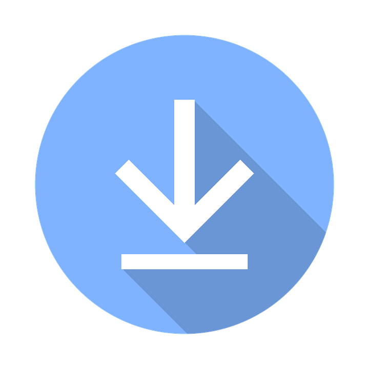

해킹 예방1.해킹이란?
해킹이란 컴퓨터 네트워크에 접속해서 악의적인 영향을 끼치는 행위를 말한다.
2. 해킹 시 나타나는 증상 및 예방방법
해킹을 당하면 정보를 빼가므로 파일명이 이상하게 바뀌거나 컴퓨터가 다운될 수 있다.
또한 랜섬웨어에 감염될 가능성도 있다.
예방방법으로는 다음의 예방 방법이 있다.
1. 지속적으로 백신 프로그램 업데이트를 통해 해킹이나 바이러스를 예방한다.
2. 프로그램을 다운로드할 때 안전한 곳에서만 다운로드하고 항상 주의한다.
배경사진 출처 : https://greenloan.tistory.com/84
돌아가기